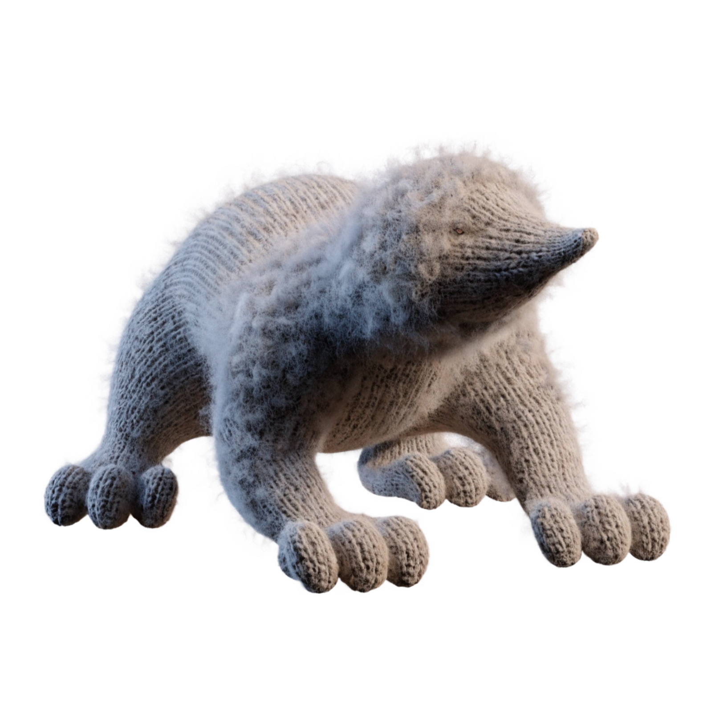

La taupe europeenne (Talpa europaea) vit exclusivement sous terre. Si elle joue un role ecologique en aerant le sol, ses galeries et taupinieres peuvent devaster une pelouse ou un jardin en quelques jours.

Nos taupiers professionnels interviennent pour un piegeage efficace et respectueux de l'environnement.